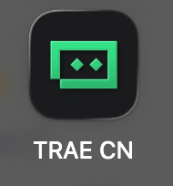
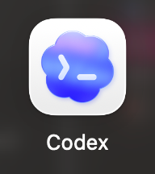
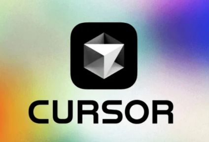

以前的 IDE：程序员的专业工作台
它能开发网页、小程序、App、浏览器插件和 API 接口等复杂软件，但主要服务专业程序员。你需要自己敲代码、查报错和配置环境，新手往往容易被门槛劝退。
先复习 IDE，再看看传统工作台怎样升级成会动手的 AI 队友。最后按自己的网络、预算和使用习惯，选一个工具开始。
英文全称：Integrated Development Environment，简写为 IDE。
中文翻译：集成开发环境。
一句话听懂：IDE 是专门用来制造网页、小程序、App 等各种程序的专业软件，它把写代码、查看文件、运行和调试等功能放进同一个工作台。
选择一个答案，再点击检查。
它能开发网页、小程序、App、浏览器插件和 API 接口等复杂软件，但主要服务专业程序员。你需要自己敲代码、查报错和配置环境，新手往往容易被门槛劝退。
它内置能写代码、查文件和调试运行的 AI Agent。你告诉它“我要做什么”，它就能协助生成网页、小程序、App 或插件，让开发更像指挥一个聪明团队。
选择更符合描述的一方。
工具底层逻辑大同小异，厂商也会不断让它们更易用。不需要全部下载，先用好一个，之后换其他工具也容易上手。

需要良好的国际网络环境，支持 Gemini 等国际优秀模型，编码能力较好；支持支付宝支付，相对 Cursor 更便宜。下载 IDE 版本即可。
打开官网下载 ↗
OpenAI 出品的 AI 编程工具。ChatGPT Plus 用户可使用相应的 Codex 用量，也能在 ChatGPT 中使用图像能力；整体性价比较高，生态正在完善。登录稍复杂，后续会有专门教程。
打开官网下载 ↗无需国际网络环境，免费使用，主要支持豆包、DeepSeek 等国产模型。Agent 能力相对有限，复杂任务更容易出错，但适合新手先体验。建议下载 IDE 版本。
打开国内版官网下载 ↗
Cursor 是 AI 编程 IDE；Claude Code 更准确地说是 AI 编程智能体，不等于 IDE，但可以在 IDE 中工作。它们能力强，但通常需要国际网络与支付方式，价格也更高，可等到复杂项目阶段再考虑。
按情境选择更合适的起点。
下面提供的是 Trae 国内版下载链接，无需国际网络环境。进入官网后，建议下载 IDE 版本。安装完成后勾选打卡，不要求完成互动才能继续。
下载 Trae 国内版 IDE ↗安装一个适合自己的 Trae IDE，即可完成本关。三个互动用于检查理解，不会阻止你继续。